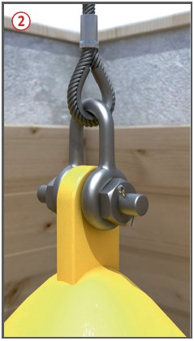
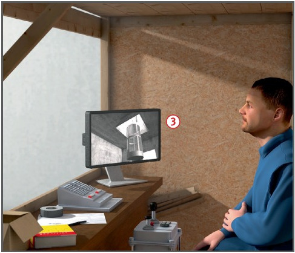

Mängel in der Konstruktion
bzw. der baulichen Beschaffenheit
oder an den hochgelegenen
Ein- bzw. Ausstiegsstellen können
zu Absturzunfällen führen.
Allgemeines
Jeden Einsatz der Berufsgenossenschaft vorher schriftlich anzeigen.
Nur Krane verwenden, die
für den Personentransport
geprüft sind.
Schutzmaßnahmen
Fördergerüste, Traversen und
Auslegerkonstruktionen statisch
nachweisen, einschließlich Ableitung
der Kräfte in bestehende
Bauteile.
Förderkörbe ausschließlich für
den Personentransport benutzen.
Nur Förderkörbe benutzen,
die mindestens 2,00 m hoch
geschlossen sind und deren Tür
mit einem Verschluss versehen
ist, der ein unbeabsichtigtes
Öffnen verhindert .
Personenförderkorb nicht
direkt in den Lasthaken des Hebezeuges einhängen.
Seile und Ketten mit Schäkeln
oder festen Ösen, die nur mit
Werkzeug lösbar sind, am
Förderkorb befestigen .
Keine Seilklemmen verwenden.
Anschlagmittel von Förderkörben nicht wechselweise zum Anschlagen von Lasten benutzen.
Vor der ersten Inbetriebnahme Probefahrt durchführen.
Nicht mehr Personen transportieren, als zugelassen sind.

Gefahrloses Ein- und Aussteigen
aus dem Förderkorb gewährleisten,
z. B. durch Absetzvorrichtungen
oder Abdeckklappen
über Förderöffnungen, die vor
dem Aussteigen geschlossen
werden.
An Durchfahrtöffnungen sind
für die Auf- und Abwärtsfahrt
besondere Sicherheitsmaßnahmen
zu treffen, z. B. Überwachung mit Kamera und Monitor .
An Förderöffnungen müssen
Einfahrttrichter vorhanden sein,
die ein Aufsetzen oder Verhaken
verhindern .

Prüfungen
Art, Umfang und Fristen erforderlicher
Prüfungen festlegen
(Gefährdungsbeurteilung) und
einhalten.
Personenförderkorb in Kombination
mit dem eingesetzten
Hebezeug, welches bestimmungsgemäß
nicht zum Heben
von Personen vorgesehen ist,
vor der ersten Bereitstellung
und Benutzung sowie an jedem
neuen Einsatzort durch eine "zur Prüfung
befähigte Person" (Sachverständigen) prüfen
lassen.